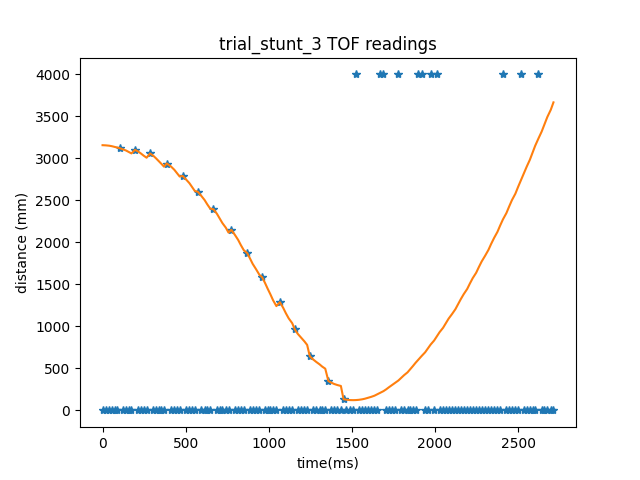

Lab 8
In Lab 8, I did task A, so I had to make the robot flip on the sticky mat and returns past the start line as quickly as possible.
Setting up stunt
To setup task A, my methodology was to run the robot forward as quickly as possible until my kalman filter output sensed it was on the sticky matt. Once it reached this point, it would go in the reverse direction as fast as possible in order to flip and return in the same direction. In order to do this, I added a modification to my pid() function. This would override the pid behavior and calculate the duty cycle of the motors like this.
if (error < desired_pos || past_point)
{
duty_cycle = -255;
past_point = 1;
}
else
duty_cycle = 220;
Then, I could rename my pid control command from lab 7 and call it like this
ble.send_command(CMD.DO_STUNT,"|5200|580")
With the arguments as the desired time of execution and the ‘desired_pos’ variable
Debugging
Initially, the car would flip too late as shown with this trial.
To fix this, I increased the desired_pos variable from 500 to about 580 in order to make the car flip sooner. Another thing I did was fix my kalman filter values. To do this, I created a command ‘CHANGE_KF’ which worked like this,
float A1, A2, A3, A4;
float B1, B2;
int dt;
float sigma_z;
float sigma_u;
success = robot_cmd.get_next_value(A1);
if (!success)
return;
success = robot_cmd.get_next_value(A2);
if (!success)
return;
success = robot_cmd.get_next_value(A3);
if (!success)
return;
success = robot_cmd.get_next_value(A4);
if (!success)
return;
success = robot_cmd.get_next_value(B1);
if (!success)
return;
success = robot_cmd.get_next_value(B2);
if (!success)
return;
success = robot_cmd.get_next_value(sigma_z);
if (!success)
return;
success = robot_cmd.get_next_value(sigma_u);
if (!success)
return;
success = robot_cmd.get_next_value(dt);
if (!success)
return;
A(0, 0) = A1;
A(0, 1) = A2;
A(1, 0) = A3;
A(1, 1) = A4;
B(0, 0) = B1;
B(1, 0) = B2;
Sigma_z(0, 0) = sigma_z;
Sigma_u(0, 0) = sigma_u;
Sigma_u(1, 1) = sigma_u;
samp_period = dt;
This would allow me to change my kalman filter parameters on the fly to fit the different model of my stunt. By using this method, I update the sample period to a lower period to get more frequent sample values and I increased the B matrix parameters since the motor had a much larger effect on the position of the car.
Another issue was that the car would move off in the wrong direction shown in this video
This is because I initially set the speed of the motors as 255 and -255 respectively, but from lab 5, I had to calibrate the motors with a calibration factor. Since the motors were at their max speed, since the calibration factor was 1.55, then 1.55*255 = 255 in terms of analogWrite inputs. To fix this, I lower the pwm value to 180. This then created a problem where the motors didn’t move fast enough to flip the car like this.
To remedy this, I made the pwm values slightly higher. This made reduced the effectiveness of the calibration factor of the motors, but the calibration was enough to make the car go in the correct direction.
Stunt
After debugging, these stunts were recorded
Trial 1
Trial 2
Trial 3

As can be seen from the data, the kalman filter allows the car to start moving in the opposite direction at about 580mm. From the video, the car successfully flips on the mat and returns to its initial position successfully.